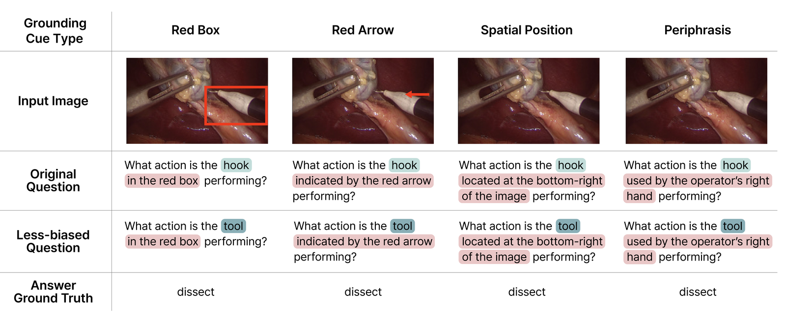

Four Grounding Cues
Removing an entity name makes a question ambiguous. Grounding cues re-anchor it — ranging from explicit visual pointers to purely textual descriptions.

Explore each cue
Grounding explicitness:
Original
Less-biased